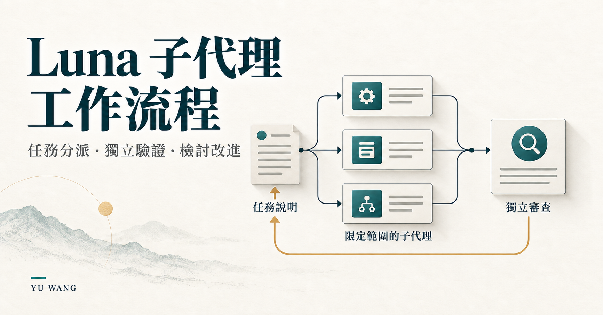

02 / 已用於個人開發
Luna 子代理工作流程
可重複使用的 Codex 工作流程：將範圍明確的工作分派給子代理，同時由主代理保留規劃、驗收及整合責任。

子代理開始前，先提供完整任務
我以一個簡單要求設計這套流程：子代理應取得足夠資訊，完成一項範圍明確的任務，不必繼承整段對話，也不必猜測尚未交代的決策。
主代理先選定方向、解決依賴關係並定義成果。每個新子代理都收到可獨立理解的任務說明，包含明確輸入、已確定的決策、範圍限制、預期輸出及與工作規模相稱的驗證方式。
從分派到驗收
- 準備完整任務說明。確認目標、輸入位置、允許的工作及通過條件清楚明確。
- 啟動範圍受限的子代理。使用指定的子代理設定，並核對可取得的執行資訊；只有互相獨立的工作才平行執行。
- 審查結果。將子代理回報視為待核對的證據，由主代理獨立評估原始目標、工作邊界及整合需求。
- 修訂後再嘗試。若工作受阻或未通過驗收，先找出原因，再將完整且修訂過的任務說明交給新子代理。
失敗檢討要能決定下一步
檢討會區分任務規格問題、任務與模型不匹配、執行缺陷、環境阻礙，以及主代理的整合問題。這讓下一步有明確方向，而不只是要求同一個子代理「再努力一次」。
只有反覆出現的結構性缺口，才列為通用 skill 的改進候選；單一任務的細節仍留在該任務中。
取得第二意見的延伸流程
配套的 ask-web-pro skill 定義了透過瀏覽器轉交問題、取得第二意見的流程。它確認選用的網頁模型與模式，保留問題，等待完整回答，再回傳回答及對話網址。主代理會先以本機證據檢查這些建議，才決定是否採用。
目前階段
已用於個人 AI 協助開發的工作流程
公開專案包含 skill 與自訂子代理設定。這是建立在既有模型與工具上的流程及設定設計；目前沒有建立成本、速度或成功率改善的基準測試結論。